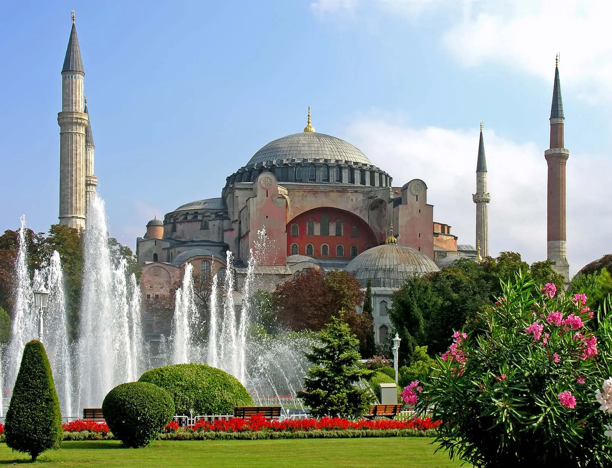
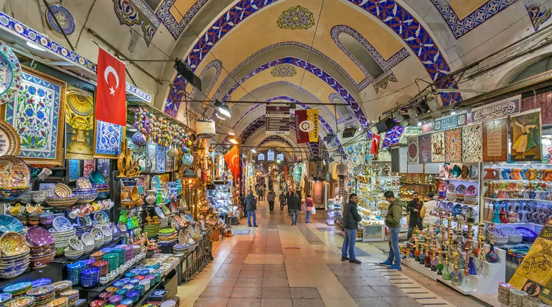
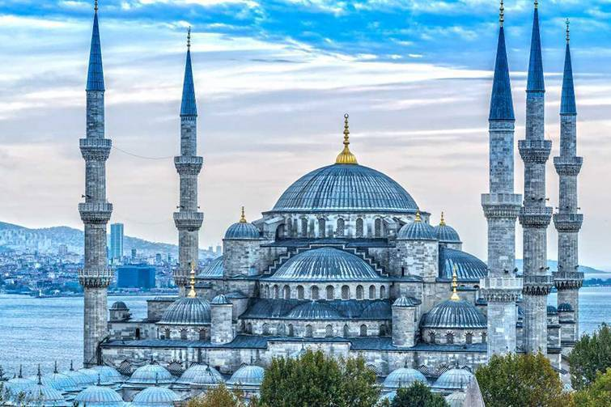

Istanbul is a major city in Turkey that straddles Europe and Asia across the Bosphorus Strait. Its Old City reflects cultural influences of the many empires that once ruled here. In the Sultanahmet district, the open-air, Roman-era Hippodrome was for centuries the site of chariot races, and Egyptian obelisks also remain. The iconic Byzantine Hagia Sophia features a soaring 6th-century dome and rare Christian mosaics.
 Hagia Sophia:
Hagia Sophia, officially the Hagia Sophia Grand Mosque, is a mosque and major cultural and historical site in Istanbul, Turkey. The mosque was originally built as a Greek Orthodox church, and was used as such from the year 360 until the conquest of Constantinople by the Ottoman Empire in 1453.
 The Grand Bazar:
he Grand Bazaar (Turkish: Kapalıçarşı, meaning 'Covered Market'; also Büyük Çarşı, meaning 'Grand Market') in Istanbul is one of the largest and oldest covered markets in the world, with 61 covered streets and over 4,000 shops on a total area of 30,700 m2, attracting between 250,000 and 400,000 visitors daily
Go to Grand Bazar
 The Blue Mosque:
The Blue Mosque in Istanbul, also known by its official name, the Sultan Ahmed Mosque, is an Ottoman-era historical imperial mosque located in Istanbul, Turkey. A functioning mosque, it also attracts large numbers of tourist visitors. It was constructed between 1609 and 1616 during the rule of Ahmed I
Go to Blue Mosque
| Place Name | Place Descriptions |
|---|---|
| Hagia Sophia | Hagia Sophia is an enormous architectural marvel in Istanbul, Turkey, that was originally built as a Christian basilica nearly 1,500 years ago |
| Grand Bazaar | Being the oldest and largest historical bazaar in the world, the Grand Bazaar was built on Sultan Fatih's order to provide income for the Hagia Sophia. This historical bazaar is located between Nuruosmaniye and Beyazıt Mosques, Cevahir, and Sandal Bedestens |
| Blue Mosque | The Blue Mosque was built between 1609 and 1616, by the architect Mehmet Ağa, instructed by Sultan Ahmed I. It was designed as an imperial show of strength to complement the imposing Hagia Sophia Mosque, which faces it across Sultanahmet Square. |
Made with ❤ By Muhammad Abrar